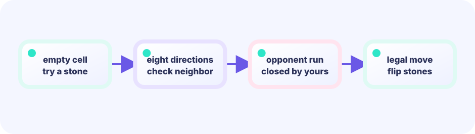

DATA
Board, move, and CPU configuration hold position truth.
Board / Move / CPU★★★★★ / PLAYABLE
Choose a friendly, positional, or look-ahead CPU and play with an 8×8 score map where corners are valuable and adjacent squares are risky.
PLAY FIRST
Tap or click to play. You can also move the yellow cursor with arrows or WASD, then place with Enter or Space. Choose a CPU with 1, 2, or 3; start a new match with R or REPLAY.

DEEP DIVE
Give every square a weight. Add it for your stones and subtract it for the opponent. The look-ahead CPU also checks the opponent's best reply after its move.
Board, move, and CPU configuration hold position truth.
Board / Move / CPULegality, flips, passes, and turn are decided in order.
legal → apply → turnBoard and evaluation project into stones, marks, and text.
board → pixelsEVALUATION LAB
Place stones and watch the position weights change the score. Corners are high; their neighbors are low.
THE UPDATE / DRAW BOUNDARY
Read keys and touch, then change positions, HP, gauges, timers, boards, and queues. Rules and decisions live here too.
input → rule → change gameRead the finished game state and place pictures, text, and effects. It never changes game state.
read game → project pixelsFor this lesson, put a new rule in Update (or a pure helper called by Update). Draw only shows the result of that rule.
EDIT THIS ENTRY
This short entry is the real Go file the learner opens and changes.
// Copyright 2026 Ebi Showcase contributors. Licensed under Apache-2.0.
package main
import "github.com/kumagi/EbiShowcase/internal/reversiui"
func main() { reversiui.Run(reversiui.CPUEvaluation) }HOW IT WORKS
This is the real mechanism the entry calls. The two labelled layers keep source and explanation traceable.
// shared pure rules: legal move → captures → apply
captures := Captures(board, player, move)YOUR FIRST RULE
In games/tracks/reversi/ebi-reversi/main.go, at board / CPU configuration, add one evaluation term without changing a ScoreMap cell. Run `go test ./...`, then verify the position locally
FEEDBACK